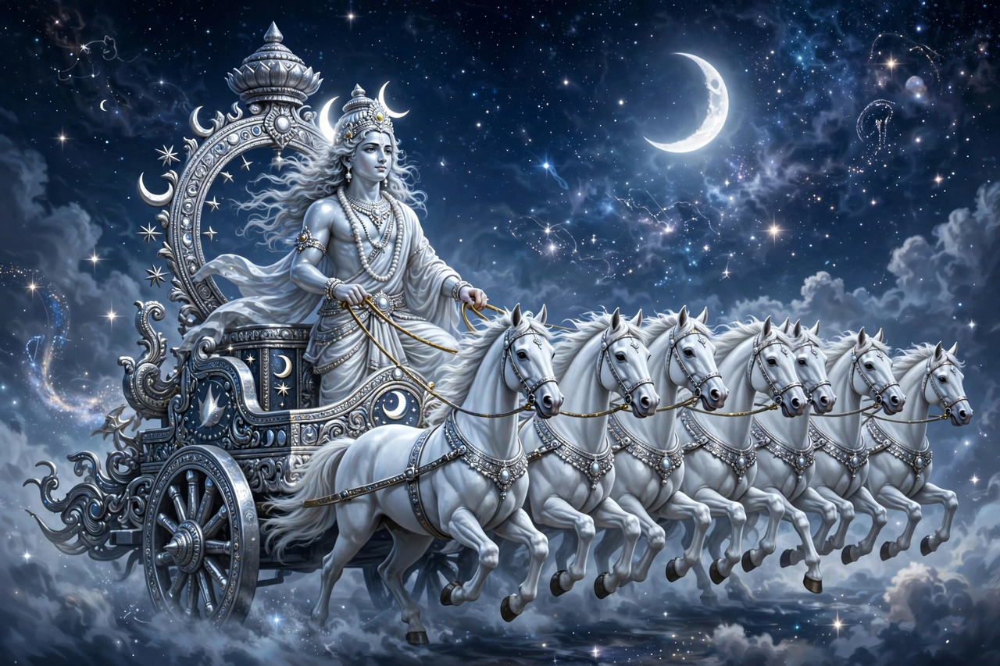

From Wikipedia, the free encyclopedia
| Chandra | |
|---|---|
| Affiliation | Hinduism; god of the moon |
| Vehicle | A chariot drawn by ten white horses (or an antelope) |
| Consorts | The 27 daughters of Daksha — the nakshatras (lunar mansions) |
| Curse | Daksha's curse of wasting, mitigated by Shiva — the origin of the moon's phases |

Chandra (Sanskrit: चन्द्र, "the shining one") is the Hindu god of the moon — the cool, soma-filled cup of the night sky, charioteer of ten white horses, lord of the plants and the tides of the mind. In the Vedas the moon is Soma himself, the divine drink in the sky, waxing as the gods drink him and waning as he refills; in later mythology Chandra is a person, brilliant and fickle, whose loves and curses explain the sky: his elopement with Tara, wife of his guru Brihaspati, set the gods to war (the Tarakamaya war) and produced Budha, the planet Mercury. The moon in Shiva's hair — Chandrashekhara, "moon-crested" — is Chandra himself, rescued and honoured by the great god.
Chandra married the twenty-seven daughters of Daksha — the nakshatras, the lunar mansions through which the moon travels monthly — but loved Rohini above the rest and neglected the others. Their father cursed him to waste away; as the moonlight failed, the plants withered and the gods, alarmed, intervened. Shiva took the dying moon into his hair and revived him, but the curse could only be halved, not lifted: Chandra waxes for fifteen days and wanes for fifteen, and his partial death each month is the dark of the moon. The myth braids astronomy, botany and domestic justice into one of Hinduism's most complete sky-stories — and every crescent in Shiva's locks retells it.